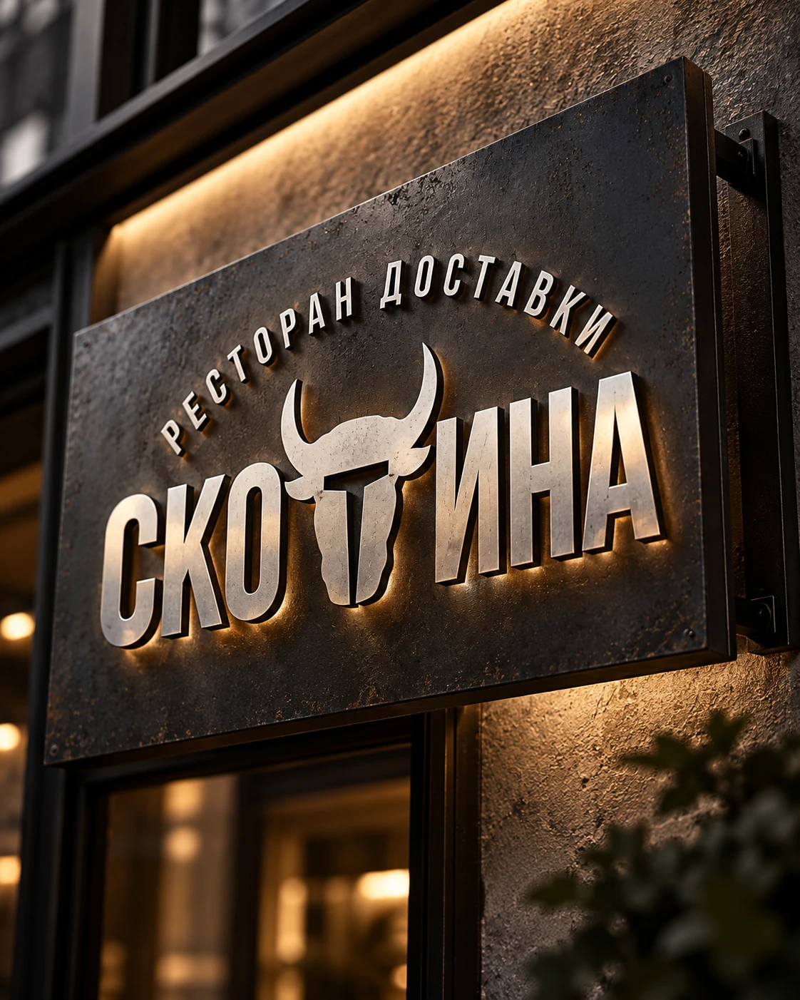
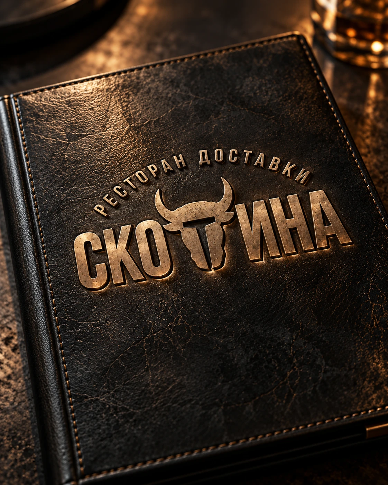
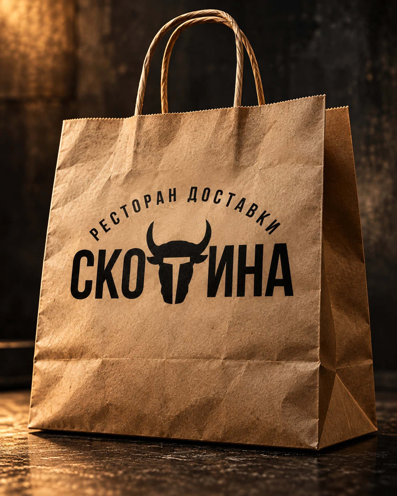
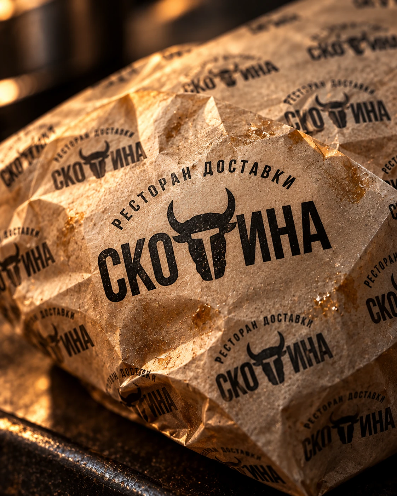
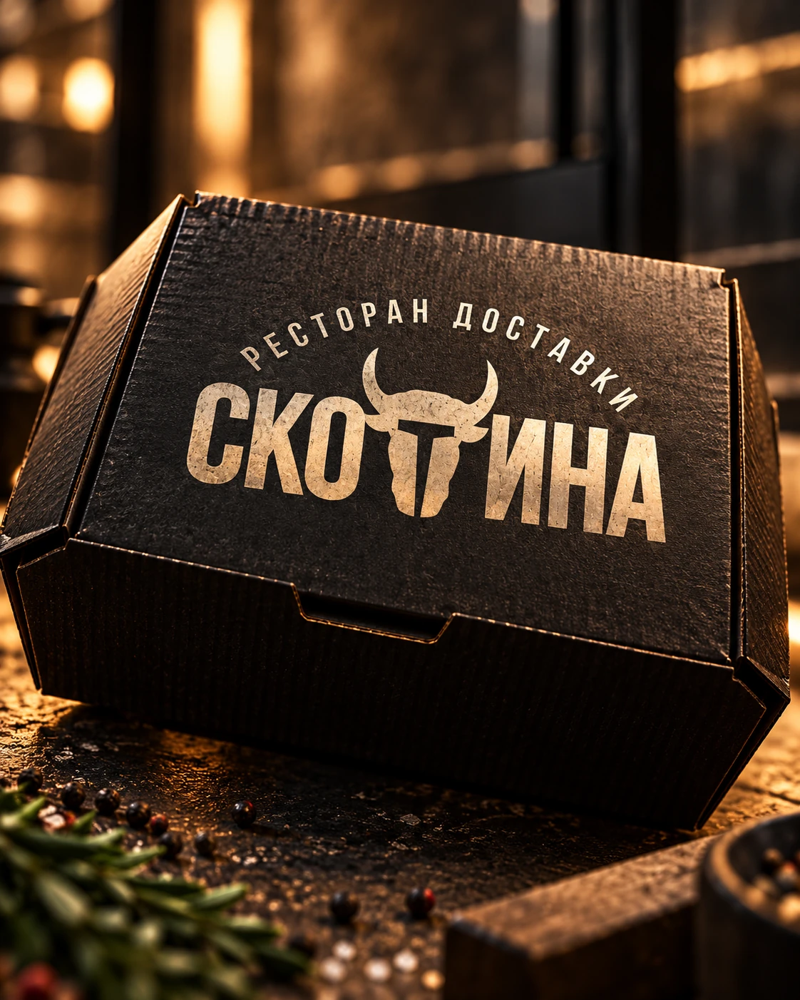
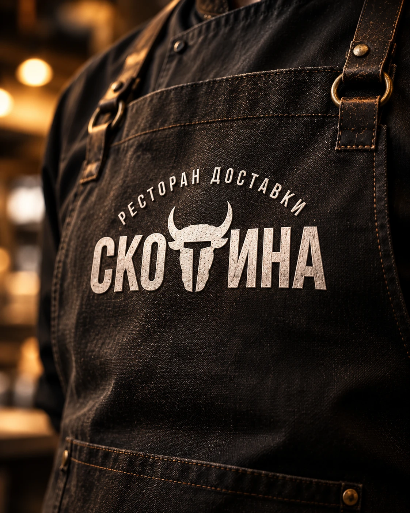
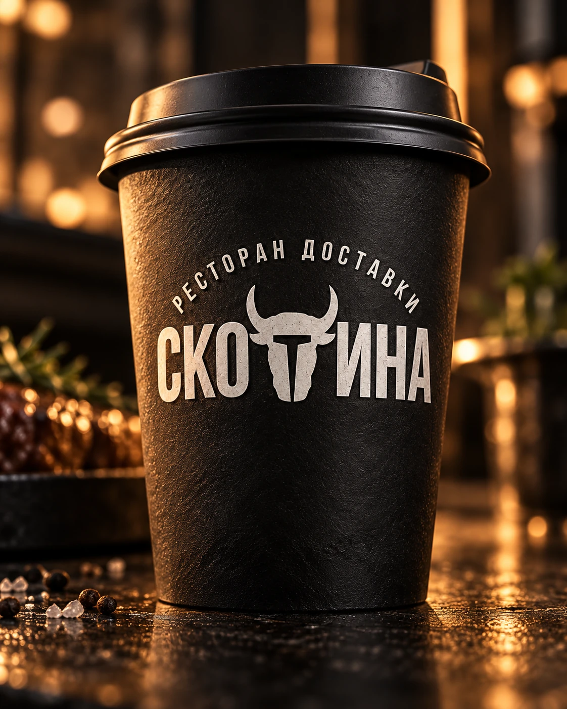
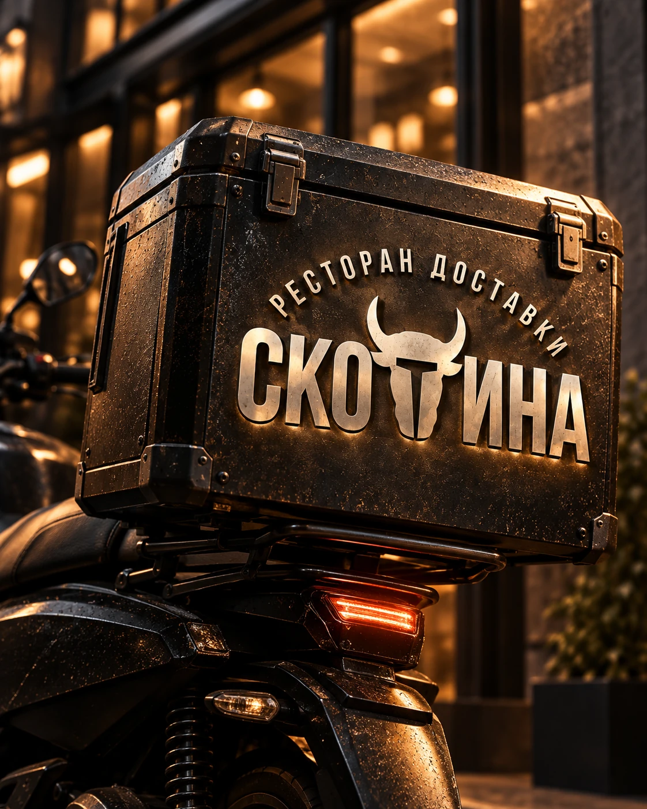
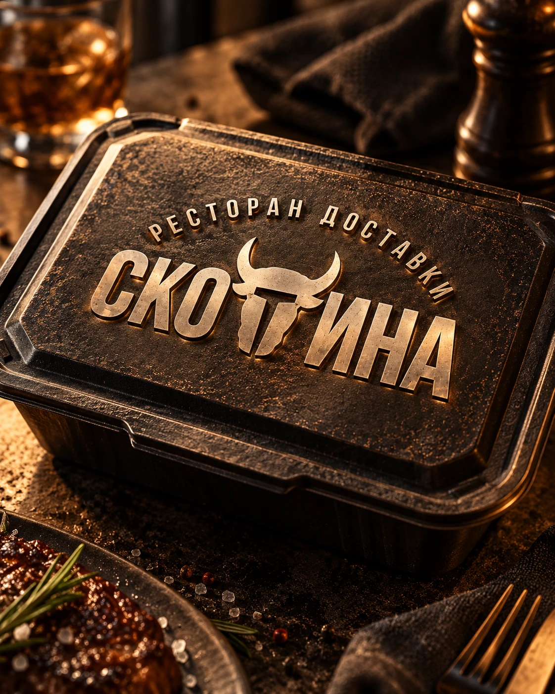

ЛОГОТИПЫ / ФИРМЕННЫЙ СТИЛЬ
Скотина
Логотип и фирменный стиль ресторана доставки «Скотина». Контрастная типографика и знак с силуэтом быка объединяют упаковку, меню, форму и носители доставки.








